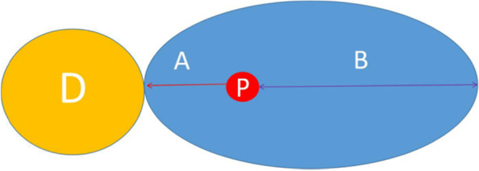

プロペラ皮弁（propeller flap）は、皮膚と皮下脂肪でできた皮弁（ひべん＝血流を保ったまま移動させる皮膚の塊）を、扇風機やプロペラの羽のように「回転」させて、すぐ隣にある欠損（皮膚が足りない部分）を覆う方法です。1991年、百束比古（ひゃくそく ひこ）らが、この皮弁を「プロペラ皮弁」と名づけて報告したのが最初とされます。原著はわずか2ページの短報（ごく短い報告）で、やけどのあとにできた引きつれ（拘縮＝こうしゅく）を治す目的で紹介されました。当初は皮下の脂肪の柱（皮下茎＝ひかけい）を軸に回すものでしたが、のちに穿通枝（せんつうし＝深部から皮膚へ立ち上がる細い血管）1本を軸にして大きく回す「穿通枝プロペラ皮弁」へと発展し、現在では手足（四肢）の再建で広く使われる皮弁のひとつになったとされます。
背景 ― やけどの「引きつれ」をどう治すか
やけど（熱傷）が深く治ると、そのあとに硬い傷あと（瘢痕＝はんこん）が残り、皮膚が縮んで引きつれることがあります。これを瘢痕拘縮（はんこんこうしゅく）と呼びます。とくに肘（ひじ）やわきの下（腋窩＝えきか）など、よく曲げ伸ばしをする関節にできると、腕が伸ばせない・上げられないといった運動の障害につながるとされます。
拘縮を治すには、引きつれた瘢痕を切り開いて関節を伸ばし、そこにできた欠損（皮膚の不足）を新しい皮膚で覆う必要があります。従来は、植皮（しょくひ＝皮膚だけを移植する方法）やZ形成術（Zけいせいじゅつ＝皮膚を三角形に組み替えて引きつれの向きを変える方法）、あるいは離れた場所から皮弁を運んでくる方法が使われてきました。しかし植皮は再び縮んで拘縮が戻りやすく、遠くから皮弁を運ぶ方法は手術が大がかりになりがちという難点があるとされます。
そこで求められたのが、拘縮のすぐ近くに残っている健康な皮膚を、なるべく簡単な操作で欠損の上へ移す方法です。近くの皮膚は色や厚みが似ているため、仕上がりがなじみやすいという利点があります。プロペラ皮弁は、この「隣の皮膚を回して持ってくる」という発想から生まれた方法と位置づけられます。
この論文がしたこと
著者らは、皮弁を挙上（きょじょう＝周囲から切り離して持ち上げること）し、それをプロペラのように回転させて欠損を覆う方法を報告し、これを「プロペラ皮弁法（the propeller flap method）」と名づけました。皮弁が軸を中心にくるりと回る様子が、扇風機やプロペラの羽に似ていることが名前の由来とされます。
抄録では、この方法を肘（ひじ）とわきの下（腋窩）の瘢痕拘縮に用いて良好な結果が得られたと述べられています。さらに、鼠径（そけい＝足の付け根）、膝の裏（膝窩＝しっか）、指などにできたやけど後の拘縮にも応用できる可能性があるとされています。
原著は2ページの短報であり、抄録には症例数や生着率（皮弁が問題なくつく割合）といった具体的な数値の記載は確認できません。そのため本ページでも、成績に関する数字は記載しません。分類上は症例報告（case report）として登録されています。
回し方の要点 ― 「軸」を中心に羽を回す
プロペラ皮弁の基本は、欠損のすぐ隣に皮弁を設計し、その一点を「軸（ピボット＝pivot point、回転の中心）」として皮弁を回すことです。皮弁は軸をはさんで、長い羽と短い羽の2枚に分かれます。皮弁を回転させると、長い羽が欠損の上に移動して欠損を覆い、短い羽がもとの皮弁があった場所（採取部）を埋める、という関係になります。
初期のプロペラ皮弁は、皮膚の下にある脂肪の柱（皮下茎）を軸にして、およそ90度ほど回転させるものだった、と後年の総説では整理されています。血管を細かく確認せず、皮下の幅広い茎で皮弁を養う方式のため、比較的手軽に行える一方、回せる角度には限りがあったとされます。
その後、この考え方は穿通枝プロペラ皮弁（perforator propeller flap）へと発展しました。これは、皮膚へ立ち上がる穿通枝1本だけを軸として皮弁を島状に切り離し、最大で180度まで大きく回すものです。下の模式図は、この穿通枝を軸とするプロペラ皮弁の考え方を示しています。軸となる穿通枝の位置と、長い羽・短い羽のバランスをどう設計するかが、確実に欠損を覆えるかどうかの鍵になるとされます。

結果
抄録で確認できる範囲では、この方法を肘とわきの下の瘢痕拘縮に用いて良好な結果が得られた、とされています。加えて、鼠径・膝の裏・指といった、やけど後の拘縮ができやすいほかの部位にも応用できる可能性が示されています。
前述のとおり、原著は短報であり、抄録には症例数・生着率・合併症の頻度などの具体的な成績は確認できません。したがって本ページでは、それらの数値には踏み込みません。
この方法の利点は、拘縮のすぐ隣にある健康な皮膚を使うため、色や厚みがなじみやすいこと、そして離れた場所から皮弁を運ぶ大がかりな手術を避けられることにあるとされます。回転という単純な動きで欠損を覆える点が、簡便さにつながっていると考えられます。
意義 ― 「回して覆う」概念が四肢再建の主役へ
この論文は、皮弁を軸のまわりに回して欠損を覆うという発想に「プロペラ皮弁」という分かりやすい名前を与えた点で、繰り返し引用されてきました。もともとはやけど後の拘縮を治すための、皮下茎を軸とする局所皮弁でした。
その後、皮膚へ立ち上がる穿通枝1本を軸にすれば皮弁をより大きく（最大180度）回せることが分かり、穿通枝プロペラ皮弁として整理されていきました。2011年には東京で開かれた国際会議での合意（コンセンサス）により、穿通枝プロペラ皮弁が「1本の栄養穿通枝を軸（ピボット）とし、大小2枚の羽からなる島状皮弁」として定義されたとされます。
現在では、すね（下腿）の下のほうや足首まわりなど、遊離皮弁（血管ごと切り離して顕微鏡下でつなぎ直す皮弁）を使うほどではないが局所では覆いにくい欠損に対して、穿通枝プロペラ皮弁が主力（ワークホース＝日常的によく使う皮弁）のひとつとして用いられています。「皮弁を回して隣を覆う」という素朴な着想が、のちの穿通枝皮弁の広がりのなかで四肢再建の重要な選択肢へと育った、その出発点にあたる報告と位置づけられます。
この論文の要点
- 皮弁を軸のまわりで「プロペラのように回転」させて隣の欠損を覆う方法を、「プロペラ皮弁」と名づけて報告した最初の論文とされる。
- もともとはやけど後の瘢痕拘縮を治す目的で、肘とわきの下（腋窩）に用いて良好な結果が得られたと述べられている。
- 鼠径・膝の裏（膝窩）・指などの拘縮にも応用できる可能性が示されている。
- 原著は2ページの短報で、抄録には症例数・生着率などの具体的な成績は確認できない。
- 初期は皮下茎を軸に約90度回すものだったが、のちに穿通枝1本を軸に最大180度回す穿通枝プロペラ皮弁へと発展したとされる。
- 現在では下腿・足首など四肢の再建で広く使われる皮弁の出発点となった報告と位置づけられる。
用語ミニ辞典
- プロペラ皮弁（propeller flap）
- 皮弁を一点（軸）のまわりに回転させ、扇風機やプロペラの羽のように動かして、すぐ隣の欠損を覆う皮弁。軸をはさんで長い羽が欠損を覆い、短い羽が採取部を埋める。
- 瘢痕拘縮（はんこんこうしゅく）
- やけどなどの傷あと（瘢痕）が縮んで皮膚が引きつれた状態。肘やわきの下など関節にできると、曲げ伸ばしがしにくくなる。
- 皮下茎（ひかけい）
- 皮膚の下にある脂肪の柱。初期のプロペラ皮弁は、この皮下茎を軸（血流の通り道）として皮弁を回していたとされる。
- 穿通枝（せんつうし）
- 深部の血管から筋膜などを貫いて皮膚へ立ち上がる細い枝。穿通枝プロペラ皮弁では、この1本が皮弁を養う血流源であり、回転の軸（ピボット）にもなる。
- 穿通枝プロペラ皮弁（perforator propeller flap）
- 皮膚へ立ち上がる穿通枝1本を軸として皮弁を島状に切り離し、最大180度まで回転させて欠損を覆う皮弁。プロペラ皮弁を血管の観点から発展させたもので、四肢の再建で広く使われる。
- 軸（ピボット＝pivot point）
- プロペラ皮弁が回転するときの中心となる点。初期は皮下茎、のちの穿通枝プロペラ皮弁では穿通枝がこれにあたる。
- 植皮 / Z形成術
- 植皮は皮膚だけを移植する方法で、それ自体に血流はなく縮みやすい。Z形成術は皮膚を三角形に組み替えて引きつれの向きを変える方法。いずれも拘縮治療の従来法だが、プロペラ皮弁は近くの皮膚を血流ごと回して覆う点が異なる。
- 島状皮弁（とうじょうひべん）
- 周囲の皮膚から切り離し、血管の茎（や穿通枝）だけでつながったまま移動させる皮弁。穿通枝プロペラ皮弁は、穿通枝1本を残して島状にした皮弁を回転させる。
本ページは形成外科の学習・参照を目的とした編集部によるオリジナルの日本語解説で、原著（英語）の逐語訳・全文転載ではありません。正確な内容・数値・図は必ず上記リンク先の原著をご確認ください。
掲載している図は、原著の図ではありません。原著の図は出版社が著作権を持ち転載できないため、同じ術式・同じ解剖を扱った無料公開（オープンアクセス／CC BY）論文の図を、出典とライセンスを明記して引用しています。